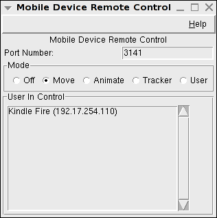
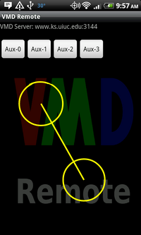

VMD Remote is a App for Android-powered devices that allows remote
control of a VMD session.
Requirements:
- VMD 1.9.1 or later
- An Android device running Android 2.2 or later
- Wi-Fi. Ideally you will be connected to the same 'subnet' as the VMD
server computer that you are wanting to control. If the two are far-removed,
network-wise, from each other, your experience may be sub-optimal.
Installation:
- If you are on an Android device that has access to the Android Market, just
go to The
Market Page For The VMD Remote Control App and install. This is the
preferred way to install the app. You will automatically have access to the
latest version.
- If you are on a device that doesn't have access to the Android Market:
- Make sure that your Android device is configured to allow
third party applications.
On the Kindle Fire, you need
to click on the Settings Wheel at the top right corner of the home screen, then
click on
More and then click on Device. From the
Device menu, make sure that the option to Allow Installation of
Applications is ON.
On other devices, on the home screen, go to Settings |
Applications and make sure that "Unknown sources" is checked/enabled to
allow the installation of non-Market applications.
- Download and install the application. VMDMobile-release.apk is the current app file.
- Before running the application, make sure that you have Wi-Fi turned on and
that you are properly connected to a network.
Running and using the App:
On the VMD desktop/laptop computer:
- Run VMD (version 1.9.1 or later).

- From the Extensions menu, you can go to Visualizations | Remote Control to
bring up a window where you can configure the session. You will need to set a
Mode other than Off to display connected users. (Note: If you are on a later
version of Windows or have other firewall software installed, you might get a
warning about network access when you choose a non-Off mode. You will need to
allow access for the plugin to work properly) The highlighted user in the
'User In Control' list is the only user who can remote control the session.
You can select a different user to be in control if you wish.
Alternatively, there is a text command, mobile, that you use to mobile-enable VMD.
If you just type 'mobile' into the console you will be presented
with usage instructions:
vmd > mobile
mobile usage:
mobile mode <mode>
modes: off, move, animate, tracker, user
mobile port <incoming network port number>
mobile get <mode/port/clientList>
mobile set activeClient NickName IP
Mode descriptions include:
- off: configure VMD to not accept incoming
connections.
- move: The android device will allow you to rotate, translate, and
scale your molecular view.
- animate: The android device will act as a 'scrub' to
move through a trajectory.
- tracker: The android device will act as tracker.
- user: Can be used, in conjunction with a user script, to do whatever you can
imagine and write the code for.
By default, VMD will listen on port 3141. If you need to change this, you can do
so.
get can be used to retrieve, for use in a script, the currently set mode,
port, and list of clients that are connected.
You can set the current user in control by calling set activeClient
like:
mobile set activeClient "Kindle Fire" "192.168.0.1"
where the name (Kindle Fire) and IP (192.168.0.1) match the nickname and IP
given for a specific user via the mobile get clientList command.
Want to automatically be able to connect to your VMD session without needing to
remember to go the Extension menu every time? Just add:
mobile mode move
to your VMD startup script.
On the Android device:
- Run the application.
- When you run VMD Remote for the very first time, you will need to configure
a couple of things: Go to
Menu | Settings and configure the
Server with the fully-qualified domain name of the machine running
VMD (it can be a numeric IP address, or a domain name). Change the Port if needed, and set Nickname to a
descriptive 16 character (or less) name for your device. The Nickname will show
up in the VMD mobile plugin window.

The buttons at the top of the screen can be configured VMD via scripting. There
are four buttons: 0, 1, 2, and 3. Lets say you have created a TCL script,
called button1Pressed that you wanted to be called whenever Button
1 is pressed. Typing the following into the console will do this:
proc button1Pressed { } {
puts "The Aux-1 button was pressed"
}
user add key Aux-1 { button1Pressed }
This script will then be called each time that Button 1 is pressed. Similarly,
you can add a script for Aux-0 or Aux-2, or Aux-3.
One place that this is quite useful is for the
ViewMaster plugin.
ViewMaster lets
you save interesting molecular views and retrieve them later. The Remote app
buttons can show the next and previous saved views, as well as
save a new view. To activate this, type the following into the VMD console:
ViewMaster::set_Aux_keys
On the mobile device, this will configure:
- Aux-0 to show the previous saved view
- Aux-1 to show the previous saved view
- Aux-2 to save a new view of the currently arranged system
If you have the VMD server configured in:
move mode:
- Pressing a finger on the Android screen and then moving from that spot will cause the
molecular system to start rotating in that direction. The farther you move from
the initial spot, the faster the rotation.
- Pinch to zoom in and out.
- If you touch two fingers to the screen (right next to each other; touching) and
drag both fingers in a direction, you will translate the system.
- If you touch two fingers to the screen and rotate both of them clockwise or
counterclockwise, the system will similarly rotate (can be combined with pinch
to zoom).
translate mode:
If you apply a finger to the Android screen and scrub/move to the
right, you will increase the trajectory frame you are viewing. Scrubbing/moving to the
left will decrease the trajectory frame you are viewing.
Menu options:
- Stop/Start Sending Touchpad - A toggle that will allow you to send or
stop sending information about pressing the touchpad. The App starts in a mode
of sending.
- Reset VMD View - The equivalent of pressing the equals
('
=') key from within VMD. If you somehow manage to 'lose' the
molecule, this is handy.

- Settings - Configure server machine name, port, and Nickname that you
want displayed to the VMD server.
The Server can be either a numeric IP, or an internet-accessible machine name.
The port defaults to 3141 and is likely OK. If you do not set a Nickname, VMD
will show a default name for your device.
You can turn on additional debugging
statements that will show on the second line of the main display, and you choose
whether or not you wish to see the VMD remote message in the background of the
touchpad area.